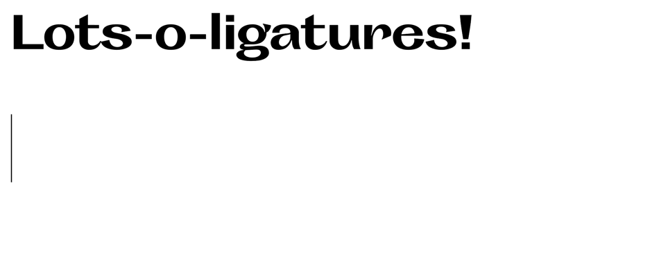
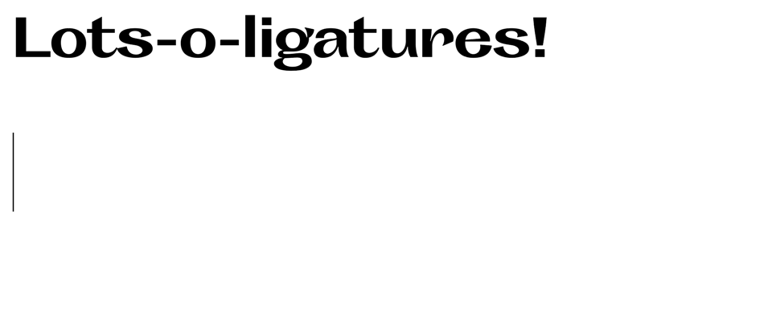

Christine Xia:
—highlighted works:
Thank you for reminding me (2019, Ongoing),
Defunkt (Work in progress),
Monday Night Seminars (2019),
Rave in Berlin 1100 (2019),
Save Us All! (2020).
—view my full portfolio


Thank you for reminding me, 2019 (Ongoing)
// 42 min 9 sec video, 5 × 7 in book, interactive installation (oscilloscope, microphone, script).
Thank you for reminding me is an ongoing project that creates new connections with our surrounding spaces by embracing the mistranslation of old ideas. Rather than taking a flawed approach to adapting valuable yet somewhat outdated writings and beliefs from the past, this work attempts to find beauty in the bits and pieces that are lost in translation while still acknowledging both the past and present. This project will continually iterate by pairing new texts with new locations, resulting in a growing number of documented performances/scenes that hold unique connections with their respective spaces.
The work is composed of three parts: a video documentation of the on-location performance, a book made from the logged speech-to-text of said performance, and an interactive installation of the oscilloscope and a script of the selected piece of writing.
// 42 min 9 sec on-location performance of We have only just met (Scene 1).

// 183-page book of recorded speech-to-text and video stills from We have only just met (Scene 1).

// Interactive installation: the microphone and script sit on one side of the door while viewers can watch the text on the oscilloscope from the other side, out of range of the speaker’s voice.
The first scene is called We have only just met and was based on translating the introductory chapter of Lauren Elkin’s Flâneuse: Women Walk the City in Paris, New York, Tokyo, Venice, and London. While personally I find gaps within and disagree with her writing approach in some places, she vocalizes an importance in not forgetting about the flâneur by trying to find a place for the role in today’s urban landscape; outside of its original definition for the bourgeois French man.
Using the old technology of an oscilloscope, the more contemporary tech development of Google’s Cloud Speech-to-Text, and my own flawed reading of the chapter, I set myself in the alleys hidden within Toronto for my performance. The text generated from my reading was then taken to create a 183-page book of Elkin’s original 21-page chapter.
Defunkt, Work in Progress
// Typeface (regular and italic), 16 × 36 in specimen poster.
Swooshes, ink traps, and alternate glyphs galore, Defunkt is a new typeface that carries on the tradition of weird and awkward grotesques. This is an avenue that has absolutely already been explored, but why not keep having fun? Defunkt seeks to inherit the conventions that define its predecessors but implements glyphs with high-contrast and dramatic strokes. With display use as their goal, characters slope in and out with gusto to produce unusual and energetic forms. Where strokes are often thin, they are thick; where they are usually wide and strong, forms are pinched and narrow; letterforms shrink, grow, and confidently flare out.


 

Monday Night Seminars, 2019
// Single-page website.
This site is a web-poster made to promote a possible series of events for Monday Night Seminars presented by the McLuhan Centre of Culture and Technology. With the series being inspired by McLuhan’s The Mechanical Bride: Folklore of Industrial Man, the idea of an ‘industrialized folklore’ seeped into the the composition, selected typefaces, choice of colour, and user interaction. Rather than this “folklore” being based in distant stories from the past, the types of cultural narratives McLuhan addresses in his essays looks to technology and the popular culture that has grown around it.
Leaning into this modern folklore theme, a composition with heavy typographic ornamentation, a web-based display face, another calligraphic typeface, a modern re-cut of Times New Roman, and a more “digitized” book reading experience with the use of stick elements that you flip/scroll through. The chaotic interactions are meant to make the users hyperaware of their engagement with the large amounts of content they are presented with, reflecting the arguments in The Mechanical Bride. This leads back into the seminars which all address different ways in which we can begin to tackle, disassemble, and take control over the overwhelming and over-growing techno-culture that surrounds us.
View the full website here (best experienced in Chrome).

// The background colour is tied to user’s mouse speed, making the page glow and flash with any fast movement.

// Details on the speakers are hidden until the user hovers over them and the large titles that say ‘Monday Night Seminars’ expand and deteriorate, revealing how the letterforms were made.
Save Us All!, 2019
// 24 × 18 in screen prints.
Save Us All! is an edition of prints that satirizes The Royal Family’s perfectly planned and measured public image to highlight the gossip and tabloid news that keeps the family relevant and present in popular culture. While exaggerating the monarchy’s grandeur by transforming their balcony photo from the Trooping the Colour ceremony into the image of saints, these “holy” portraits are overlayed with loud and brash text—the background is composed of tabloid articles that gossip and speculate about the family’s lives and the foreground consists of the words from God Save the Queen stretched, scaled, and transformed into eye-catching headlines and titles. This work is a part of my undergraduate capstone project to be completed in May 2020 that addresses the issue of disinterring history and speaking about the pain of others.


Rave in Berlin 1100, 2019
// Web-based typeface.
Rave in Berlin 1100 is a display face created purely with HTML and CSS. While its rigid set of rules and alignments keep it in a strict blackletter-esque order, its pointed curves sweep above and below the cap-heights and baselines to form a systematically dramatic set of glyphs. This display face was used in my web-poster for Monday Night Seminars.
View the full website here.